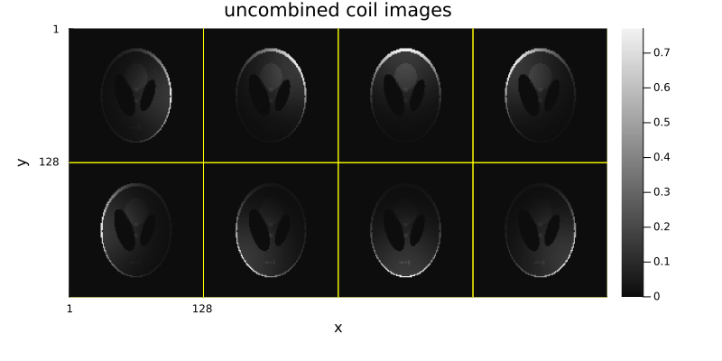
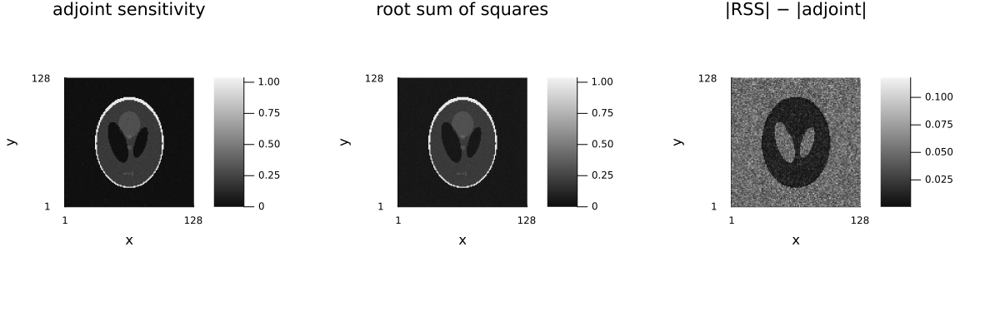
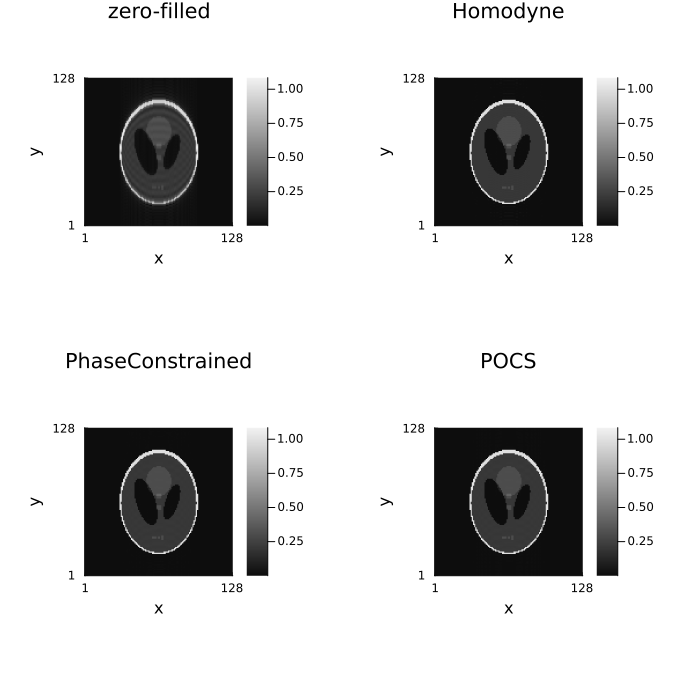
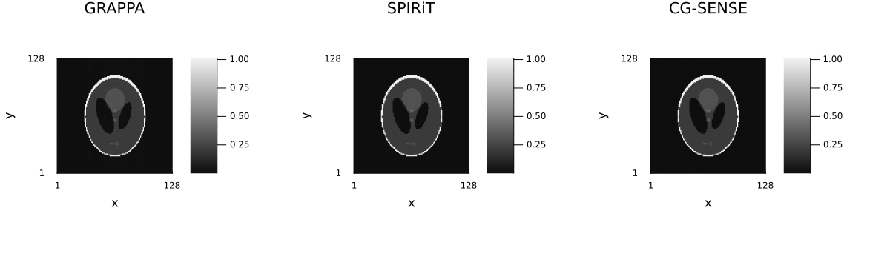

4 — Reconstruction methods
Download this tutorial as a Jupyter notebook (with NotebookUtils.jl next to it).
Everything Ristretto can do is expressed as a method object handed to reconstruct. A method says what kind of reconstruction this is — how the measurements become an image. This tutorial is a tour of the methods that are not "iterative SENSE with a regularizer": direct reconstruction and coil combination, partial Fourier, and autocalibrated parallel imaging (GRAPPA, SPIRiT).
Iterative SENSE with a regularizer has its own tutorial. That is IterativeReconstruction(reg...) — the standard compressed-sensing formulation — and which regularizer to put in it, what each one costs and what it is good at, is the whole subject of 05_regularization. It appears here only as a reference line in a couple of comparisons. Data-fidelity choices and signal models — including calibrationless structured low-rank k-space filling — are the subject of 11_advanced_reconstruction.
ReconstructionMethod
├── DirectMethod → DirectReconstruction, GRAPPA, Homodyne, PhaseConstrained, …
└── IterativeMethod → IterativeReconstruction, POCS, SPIRiT(iterative = true), …Several of these methods do iterate internally, and a few of the comparisons below run IterativeReconstruction as a reference. That is deliberately kept in the background here: how the iteration is driven — which solver, how many iterations, what stopping tolerance, how much the run prints — is the subject of the next tutorial, 06_algorithms_and_configuration. Where this tutorial passes maxit or algorithm, treat the values as "enough to converge on this small phantom" and look there for how to choose them.
Contents
- Direct reconstruction and coil combination
- Partial Fourier — Homodyne, phase-constrained, POCS
- GRAPPA and SPIRiT
- Checking applicability
- References and further reading
using .NotebookUtils
using Ristretto
using GeometricMedicalPhantoms:
create_shepp_logan_phantom, create_torso_phantom, MRISheppLoganIntensities, TissueMask
using MIRTjim: jim
using Plots
using NamedDims
using FFTW
using LinearAlgebra
using Statistics
using Random
Random.seed!(0);1. Direct reconstruction and coil combination
DirectReconstruction is $\mathcal{A}^H y$: inverse FFT, then combine the coils. The coil_combination keyword names the three strategies:
AdjointSensitivity()(the default) — $\sum_c \bar s_c x_c$, the SNR-optimal combination, and the only one that keeps the image's phase. It needs sensitivity maps.RootSumSquares()— $\sqrt{\sum_c |x_c|^2}$, needs no maps but discards the phase.NoCoilCombination()— keep the coil channels separate.
All three are honored by DirectReconstruction on Cartesian and non-Cartesian data, and by the methods that synthesize k-space (GRAPPA, SPIRiT, and the KSpaceToImage signal model — those three default to RootSumSquares(), since they do not need maps for anything else).
Without sensitivity maps there is nothing to combine. The coil axis is then not part of the signal model at all: it is a batch dimension, and the reconstruction is one independent image per channel. DirectReconstruction()'s default therefore resolves to NoCoilCombination() on such an acquisition — and naming AdjointSensitivity() or RootSumSquares() explicitly raises an error that says so, instead of silently handing back uncombined coils under a name that promises a combined image.
nx, ny, nc = 128, 128, 8
x_true = NamedDimsArray{(:x, :y)}(
create_shepp_logan_phantom(nx, ny, :axial; ti = MRISheppLoganIntensities(), eltype = ComplexF32)
)
smaps = NamedDimsArray{(:x, :y, :coil)}(coil_sensitivities(nx, ny, nc))
acq_full = AcquisitionInfo(
NamedDimsArray{(:kx, :ky, :coil)}(zeros(ComplexF32, nx, ny, nc));
is3D = false, sensitivity_maps = smaps
)
data_full = simulate_acquisition(x_true, acq_full; keep_sensitivity_maps = true)
# With sensitivity maps and the default combination: one combined image.
x_adj = reconstruct(data_full, DirectReconstruction())
println("AdjointSensitivity: ", size(x_adj), " ", dimnames(x_adj))
# Same data, root sum of squares: also one image, but no phase.
x_rss = reconstruct(data_full, DirectReconstruction(RootSumSquares()))
println("RootSumSquares: ", size(x_rss), " ", dimnames(x_rss))
# Same data, coils kept apart.
x_coils = reconstruct(data_full, DirectReconstruction(NoCoilCombination()))
println("NoCoilCombination: ", size(x_coils), " ", dimnames(x_coils))
# The same k-space described *without* maps: the default resolves to NoCoilCombination.
acq_nomaps = AcquisitionInfo(data_full.kspace_data; is3D = false)
x_nomaps = reconstruct(acq_nomaps, DirectReconstruction())
println("no maps, default: ", size(x_nomaps), " ", dimnames(x_nomaps))
# Asking for a combination that needs maps is an error, not a silently uncombined result.
try
reconstruct(acq_nomaps, DirectReconstruction(AdjointSensitivity()))
catch e
println("\nno maps, AdjointSensitivity: ", sprint(showerror, e))
end┌ Warning: simulate_acquisition: the phantom has the reconstruction's size 128×128, so the data are simulated with the operator that will reconstruct them (the inverse crime), and reconstructions look better than they would on measured data. Simulate from a finer, area-sampled phantom, e.g. 202×202; pass `inverse_crime_check = false` where the consistency is intended.
└ @ Ristretto ~/work/Ristretto.jl/Ristretto.jl/src/simulation/simulate_acquisition.jl:313
AdjointSensitivity: (128, 128) (:x, :y)
RootSumSquares: (128, 128) (:x, :y)
NoCoilCombination: (128, 128, 8) (:x, :y, :coil)
no maps, default: (128, 128, 8) (:x, :y, :coil)
no maps, AdjointSensitivity: ArgumentError: AdjointSensitivity coil combination needs sensitivity maps, and this acquisition carries none -- its coil axis is a batch dimension, reconstructed one channel at a time. Drop the argument (or pass NoCoilCombination()) to get the per-channel images, pass RootSumSquares() for the maps-free combination, or attach sensitivity maps (see estimate_sensitivities).jim(x_coils; title = "uncombined coil images", nrow = 2, size = (800, 400))
Where the two combinations actually differ
On noiseless data with normalized maps ($\sum_c |s_c|^2 \equiv 1$, which is what coil_sensitivities produces) the two magnitude images are nearly indistinguishable — which is why a side-by-side of them teaches nothing. The difference is a noise effect, and it shows up in two places:
- Root sum of squares is a biased magnitude estimator. Squaring and adding the coil channels rectifies the noise, so signal-free regions acquire a positive floor that grows with the coil count; the sensitivity-weighted sum keeps noise zero-mean and complex.
- The sensitivity-weighted sum is the matched filter for the coil array, so it is SNR-optimal; root sum of squares is not, and loses the most where a single coil dominates.
So the comparison below is run on noisy data, and the figure carries a difference panel on its own color scale next to the two magnitude images.
data_noisy = add_noise(data_full; snr_db = 12)
xn_adj = reconstruct(data_noisy, DirectReconstruction())
xn_rss = reconstruct(data_noisy, DirectReconstruction(RootSumSquares()))
println("NRMSE vs. truth")
println(" AdjointSensitivity ", round(nrmse(xn_adj, x_true), digits = 4))
println(" RootSumSquares ", round(nrmse(xn_rss, x_true), digits = 4))
background = abs.(unname(x_true)) .< 1.0e-6
println("mean magnitude in the signal-free background (the RSS noise floor)")
println(" AdjointSensitivity ", round(mean(abs.(unname(xn_adj))[background]), digits = 4))
println(" RootSumSquares ", round(mean(abs.(unname(xn_rss))[background]), digits = 4))NRMSE vs. truth
AdjointSensitivity 0.0835
RootSumSquares 0.2207
mean magnitude in the signal-free background (the RSS noise floor)
AdjointSensitivity 0.0154
RootSumSquares 0.048# The two magnitude images share a colour scale; the difference panel needs its own (the error is
# far smaller than either image), so the figure is assembled from the two shared-scale panels plus
# the difference panel rather than through `side_by_side` alone.
clim_shared = (0.0, maximum(max.(abs.(unname(xn_adj)), abs.(unname(xn_rss)))))
jim(
jim(abs.(unname(xn_adj)); title = "adjoint sensitivity", clim = clim_shared),
jim(abs.(unname(xn_rss)); title = "root sum of squares", clim = clim_shared),
difference_image(unname(xn_rss), unname(xn_adj); title = "|RSS| − |adjoint|");
layout = (1, 3), size = (1200, 380)
)
The difference image is not noise-shaped scatter: it is a picture of the object, brightest where the phantom is dark, because that is where the rectification bias is largest relative to the signal. Only AdjointSensitivity keeps the phase, so it is the one to use whenever the phase matters (partial Fourier, off-resonance correction, phase-contrast flow).
2. Partial Fourier
A partial-Fourier acquisition measures somewhat more than half of k-space and relies on conjugate symmetry for the rest. Ristretto detects the asymmetric band from the sampling pattern.
Nx, Ny = 128, 128
# A phantom with smooth phase — partial Fourier lives or dies on the phase estimate.
mag = abs.(create_shepp_logan_phantom(Nx, Ny, :axial; ti = MRISheppLoganIntensities()))
X = [(x - Nx / 2) / Nx for x in 1:Nx, y in 1:Ny]
Y = [(y - Ny / 2) / Ny for x in 1:Nx, y in 1:Ny]
img_pf = ComplexF32.(mag .* cis.(0.8f0 .* (X .+ Y)))
# 65% of the phase encodes, on one side: `PartialFourierSampling` states exactly this
# (tutorial 03 §3).
subsampling_pf = create_sampling_pattern(PartialFourierSampling(0.65), (Nx, Ny))
acq_pf = simulate_acquisition(
img_pf,
AcquisitionInfo(;
is3D = false, image_size = (Nx, Ny), subsampling = subsampling_pf
); keep_sensitivity_maps = true
)
println("acquired k-space: ", size(acq_pf.kspace_data), " of ", (Nx, Ny))
band = partial_fourier_band(acq_pf)
println("partial-Fourier band: dimension ", band.dim, ", lines ", first(band.acquired_range), ":", last(band.acquired_range))┌ Warning: simulate_acquisition: the phantom has the reconstruction's size 128×128, so the data are simulated with the operator that will reconstruct them (the inverse crime), and reconstructions look better than they would on measured data. Simulate from a finer, area-sampled phantom, e.g. 202×202; pass `inverse_crime_check = false` where the consistency is intended.
└ @ Ristretto ~/work/Ristretto.jl/Ristretto.jl/src/simulation/simulate_acquisition.jl:313
acquired k-space: (128, 83) of (128, 128)
partial-Fourier band: dimension 2, lines 1:83# Every method here returns an image in the data's own units — the zero-filled adjoint, the three
# partial-Fourier methods and the phantom are all on one scale, so a plain NRMSE against the
# magnitude phantom is meaningful with no amplitude alignment. (The least-squares scale factor
# that would align them is printed below to make that concrete: it is 1 to within a percent.)
x_zf = reconstruct(acq_pf)
x_hom_lin = reconstruct(acq_pf, Homodyne(filter = LinearRamp()))
x_hom_step = reconstruct(acq_pf, Homodyne(filter = StepRamp()))
x_pc = reconstruct(acq_pf, PhaseConstrained())
x_pocs = reconstruct(acq_pf, POCS(maxit = 30))
for (label, x̂) in (
("zero-filled", x_zf), ("Homodyne / LinearRamp", x_hom_lin), ("Homodyne / StepRamp", x_hom_step),
("PhaseConstrained", x_pc), ("POCS", x_pocs),
)
a = abs.(unname(x̂))
α = sum(a .* mag) / sum(abs2, a)
println(rpad(label, 24), " NRMSE ", rpad(round(nrmse(x̂, mag), digits = 4), 8), " (scale factor ", round(α, digits = 3), ")")
endzero-filled NRMSE 0.2154 (scale factor 1.012)
Homodyne / LinearRamp NRMSE 0.0223 (scale factor 1.005)
Homodyne / StepRamp NRMSE 0.0415 (scale factor 0.999)
PhaseConstrained NRMSE 0.0118 (scale factor 1.001)
POCS NRMSE 0.0127 (scale factor 1.001)side_by_side(
unname(x_zf), unname(x_hom_lin), unname(x_pc), unname(x_pocs);
titles = ("zero-filled", "Homodyne", "PhaseConstrained", "POCS")
)
The two filters shape the transition band of the homodyne weighting; POCS iterates between enforcing the measured samples and the estimated phase, and PhaseConstrained solves a least-squares problem with the phase fixed. All three use only the acquired band — no sensitivity maps needed.
3. GRAPPA and SPIRiT
Autocalibrated parallel imaging fills in the missing k-space lines from a kernel fitted on a fully-sampled autocalibration (ACS) region — no explicit sensitivity maps are used for the interpolation itself.
The two differ in what the kernel is fitted to do:
- GRAPPA (Griswold 2002) fits, for each missing-line offset, the weights that predict one target sample from a neighbourhood of acquired lines. It therefore needs a regular undersampling pattern, and it fills each hole once.
- SPIRiT (Lustig & Pauly 2010) fits a kernel that predicts every sample from all of its neighbours, acquired or not — a self-consistency relation $k = G k$ on the whole multi-channel k-space. That relation is then iterated to a fixed point while the acquired samples are held. It is not restricted to a regular pattern.
Nc = 8
img_pi = ComplexF32.(abs.(create_shepp_logan_phantom(Nx, Ny, :axial; ti = MRISheppLoganIntensities())))
sens = coil_sensitivities(Nx, Ny, Nc)
# R = 2 with a 24-line ACS block in the centre — `RegularLatticeSampling` states exactly this
# (tutorial 03 §3): every second phase encode, plus a fully sampled centre 24/128 of k-space wide.
R = 2
subsampling_pi = create_sampling_pattern(RegularLatticeSampling(R; center_fraction = 24 / Ny), (Nx, Ny))
println("net acceleration: ", round(Ny / sum(subsampling_pi[2]), digits = 2), "×")
# Noise is what makes this a comparison rather than a formality: on noiseless data at R = 2 every
# method below recovers the phantom to within a fraction of a percent.
acq_pi = add_noise(
simulate_acquisition(
img_pi,
AcquisitionInfo(;
is3D = false, image_size = (Nx, Ny), subsampling = subsampling_pi, sensitivity_maps = sens
); keep_sensitivity_maps = true
);
snr_db = 30
)CartesianAcquisitionInfo:
- kspace data = Array{ComplexF32}<128×77×8>
- encoding = 2D
- image size = 128×128
- sensitivity maps = ComplexF32<128×128×8>
- subsampling = (:, Vector{Bool}<128>)x_grappa = reconstruct(acq_pi, GRAPPA(kernel_size = (3, 2), calib_size = (Nx, 24)))
x_spirit = reconstruct(acq_pi, SPIRiT(kernel_size = (5, 5), calib_size = (Nx, 24), maxit = 30))
x_sense = reconstruct(acq_pi, IterativeReconstruction(L2Image(1.0f-3); maxit = 30))
println("GRAPPA ", round(nrmse(x_grappa, img_pi), digits = 4))
println("SPIRiT ", round(nrmse(x_spirit, img_pi), digits = 4))
println("CG-SENSE (L2) ", round(nrmse(x_sense, img_pi), digits = 4))
side_by_side(
unname(x_grappa), unname(x_spirit), unname(x_sense);
titles = ("GRAPPA", "SPIRiT", "CG-SENSE"), size = (1200, 350)
)
CG-SENSE wins here because it is the only one of the three given the true sensitivity maps; GRAPPA and SPIRiT calibrate everything they know from the 24-line ACS block. Between the two autocalibrated methods SPIRiT is the more accurate, which is what its extra work buys: a 5×5 kernel over all coils, applied to every k-space location rather than only to the holes.
A tuning knob worth knowing about.
SPIRiT(; calib_λ = 1e-4)is a relative Tikhonov penalty on the calibration solve (not on the reconstruction). Neighbouring ACS samples are highly correlated, so the fit is close to rank-deficient and the unregularized kernel amplifies noise. The default is small; raise it on low-SNR data, set it to0for the plain least-squares fit.
CG-SENSE's advantage above comes from being handed the true sensitivity maps, which no real acquisition comes with; estimating them from the data is its own subject, and every estimator Ristretto offers is compared in 09_real_data_cartesian.
# SPIRiT can also be run as an iterative k-space problem: the SPIRiT kernel becomes a
# consistency term on the full multi-channel k-space (`KSpaceToImage` signal model, tutorial 11
# §2.2).
x_spirit_it = reconstruct(
acq_pi, SPIRiT(kernel_size = (5, 5), calib_size = (Nx, 24), maxit = 30, iterative = true)
)
println("SPIRiT (fixed point) ", round(nrmse(x_spirit, img_pi), digits = 4))
println("SPIRiT (iterative) ", round(nrmse(x_spirit_it, img_pi), digits = 4))SPIRiT (fixed point) 0.028
SPIRiT (iterative) 0.02934. Checking applicability
check_applicable(method, acq) decides whether a method can run on given data. reconstruct calls it for you, before any work is done, so an unsupported combination fails with a sentence that names the problem instead of producing a plausible-looking wrong image.
GRAPPA is the method with the most to check. Its kernel is fitted once per missing-line offset $t = 1 \ldots R-1$ and then applied everywhere, which presupposes:
- a Cartesian acquisition with fully sampled readout lines,
- acquired phase-encoding lines on a regular lattice of stride $R$, and
- a contiguous fully sampled ACS block, long enough for the kernel.
Requirement 2 is the one that surprises people: GRAPPA cannot reconstruct randomly undersampled data at all. There is no "GRAPPA kernel" for an irregular pattern — the weights are defined by a fixed geometric relationship between a hole and its neighbours, and a random mask does not have one. (A variable-density mask often does contain a fully sampled centre, so the presence of an ACS region is not what disqualifies it.)
using Ristretto: check_applicable
# A variable-density pattern (tutorial 03 §3): it even has a fully sampled centre, but its
# acquired lines are not on any lattice.
pattern_vd = create_sampling_pattern(VariableDensitySampling(PolynomialDistribution(3), R), (Nx, Ny))
data_vd = simulate_acquisition(
img_pi,
AcquisitionInfo(; is3D = false, image_size = (Nx, Ny), sensitivity_maps = sens, subsampling = pattern_vd); keep_sensitivity_maps = true
)
try
check_applicable(GRAPPA(), data_vd)
catch e
println(sprint(showerror, e))
end┌ Warning: simulate_acquisition: the phantom has the reconstruction's size 128×128, so the data are simulated with the operator that will reconstruct them (the inverse crime), and reconstructions look better than they would on measured data. Simulate from a finer, area-sampled phantom, e.g. 202×202; pass `inverse_crime_check = false` where the consistency is intended.
└ @ Ristretto ~/work/Ristretto.jl/Ristretto.jl/src/simulation/simulate_acquisition.jl:313
ArgumentError: GRAPPA requires a regularly undersampled phase-encoding pattern (a fixed stride R plus a contiguous ACS block), but 23 of the 49 acquired lines outside the ACS block do not lie on the stride-2 lattice (line-to-line gaps [1, 2, 3, 5, 6, 9]). Random / variable-density patterns are not GRAPPA-reconstructible; use a calibrationless or compressed-sensing method instead.# Regular stride, but no ACS block at all: nothing to calibrate the kernel on. `check_applicable`
# inspects the sampling pattern of *acquired data*, so this needs simulated k-space, not just the
# empty `AcquisitionInfo` description.
mask_no_acs = falses(Ny)
mask_no_acs[1:2:Ny] .= true
acq_no_acs = simulate_acquisition(
img_pi,
AcquisitionInfo(;
is3D = false, image_size = (Nx, Ny), sensitivity_maps = sens, subsampling = (:, mask_no_acs)
); keep_sensitivity_maps = true
)
try
check_applicable(GRAPPA(), acq_no_acs)
catch e
println(sprint(showerror, e))
end┌ Warning: simulate_acquisition: the phantom has the reconstruction's size 128×128, so the data are simulated with the operator that will reconstruct them (the inverse crime), and reconstructions look better than they would on measured data. Simulate from a finer, area-sampled phantom, e.g. 202×202; pass `inverse_crime_check = false` where the consistency is intended.
└ @ Ristretto ~/work/Ristretto.jl/Ristretto.jl/src/simulation/simulate_acquisition.jl:313
ArgumentError: GRAPPA requires a fully sampled autocalibration (ACS) region, but the sampling mask has no run of consecutive phase-encoding lines.# The R = 2 + ACS acquisition from §3 passes.
check_applicable(GRAPPA(calib_size = (Nx, 24)), acq_pi)
println("GRAPPA is applicable to the R = 2 + ACS acquisition")GRAPPA is applicable to the R = 2 + ACS acquisitionFor the patterns GRAPPA rejects, the alternatives are the ones this tutorial has already shown: SPIRiT, whose self-consistency relation holds at every k-space location and so does not care about the lattice (it still needs a calibration region), or an IterativeReconstruction with a sparsity prior — which is what a variable-density mask was designed for in the first place.
A custom method plugs into the same hook: subtype DirectMethod or IterativeMethod and override check_applicable to state your own preconditions (see tutorial 12).
References
[1] M. A. Griswold, P. M. Jakob, R. M. Heidemann, M. Nittka, V. Jellus, J. Wang, B. Kiefer, and A. Haase, "Generalized autocalibrating partially parallel acquisitions (GRAPPA)," Magnetic Resonance in Medicine, vol. 47, no. 6, pp. 1202–1210, 2002, doi: 10.1002/mrm.10171.
[2] M. Lustig and J. M. Pauly, "SPIRiT: Iterative self-consistent parallel imaging reconstruction from arbitrary k-space," Magnetic Resonance in Medicine, vol. 64, no. 2, pp. 457–471, 2010, doi: 10.1002/mrm.22428.
[3] D. C. Noll, D. G. Nishimura, and A. Macovski, "Homodyne detection in magnetic resonance imaging," IEEE Transactions on Medical Imaging, vol. 10, no. 2, pp. 154–163, 1991, doi: 10.1109/42.79473.
[4] K. P. Pruessmann, M. Weiger, M. B. Scheidegger, and P. Boesiger, "SENSE: Sensitivity encoding for fast MRI," Magnetic Resonance in Medicine, vol. 42, no. 5, pp. 952–962, 1999, doi: 10.1002/(SICI)1522-2594(199911)42:5<952::AID-MRM16>3.0.CO;2-S (doi.org).
Further reading
The clinical picture behind these methods, from Questions and Answers in MRI:
- Parallel imaging and PI: the two types — where SENSE-like and GRAPPA-like methods differ, in the same terms §1 and §3 use.
- GRAPPA / ARC — the vendor names for §3's method.
- Parallel imaging: noise and PI: artifacts — the g-factor and the failure modes the NRMSE numbers above only summarize.
- Partial Fourier and phase conjugate symmetry — the physics §2 exploits, and the vendor names (half scan, fractional NEX).
Environment
print_versions()Julia Version 1.13.1
Commit 96ca370cf0e (2026-09-25 19:34 UTC)
Build Info:
Official https://julialang.org release
Platform Info:
OS: Linux (x86_64-linux-gnu)
CPU: 4 × AMD EPYC 9V45 96-Core Processor
WORD_SIZE: 64
LLVM: libLLVM-20.1.8 (ORCJIT, znver5)
GC: Built with stock GC
Threads: 2 default, 1 interactive, 2 GC (on 4 virtual cores)
Environment:
JULIA_PKG_SERVER_REGISTRY_PREFERENCE = eager
JULIA_NUM_THREADS = 2
Ristretto 0.1.0 (dev)
AbstractOperators not loaded
FFTWOperators not loaded
NFFTOperators not loaded
WaveletOperators not loaded
DSPOperators not loaded
ContourletOperators not loaded
StructuredOptimization not loaded
ProximalOperators not loaded
ProximalAlgorithms not loaded
OperatorCore not loaded
NestedThreading 0.1.3